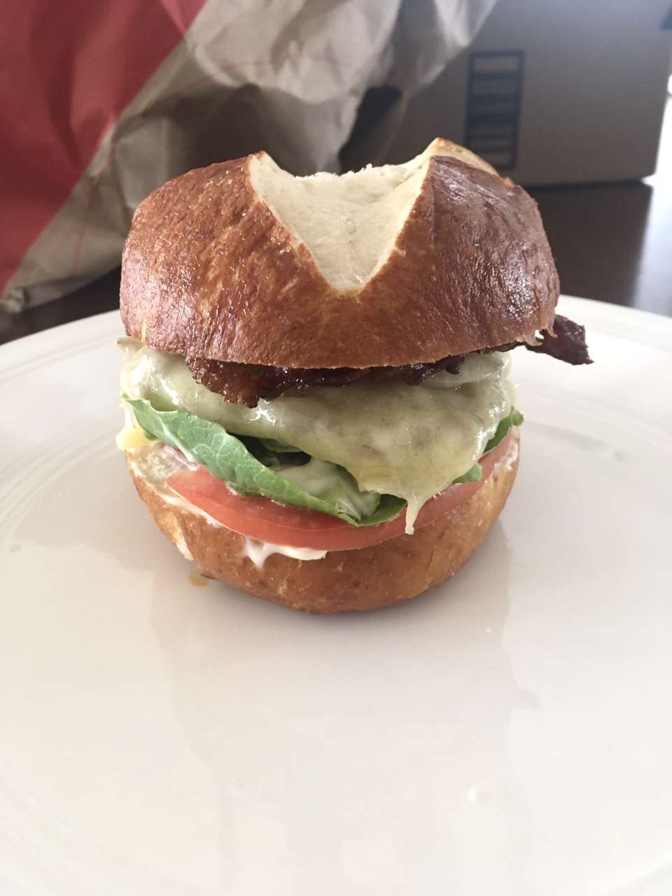
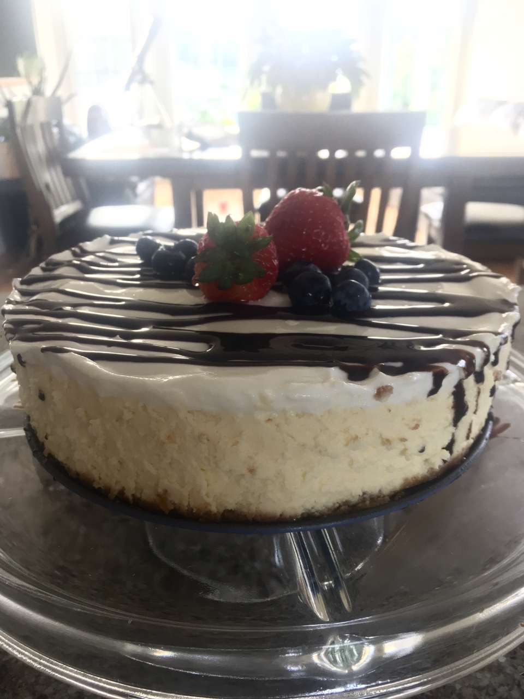
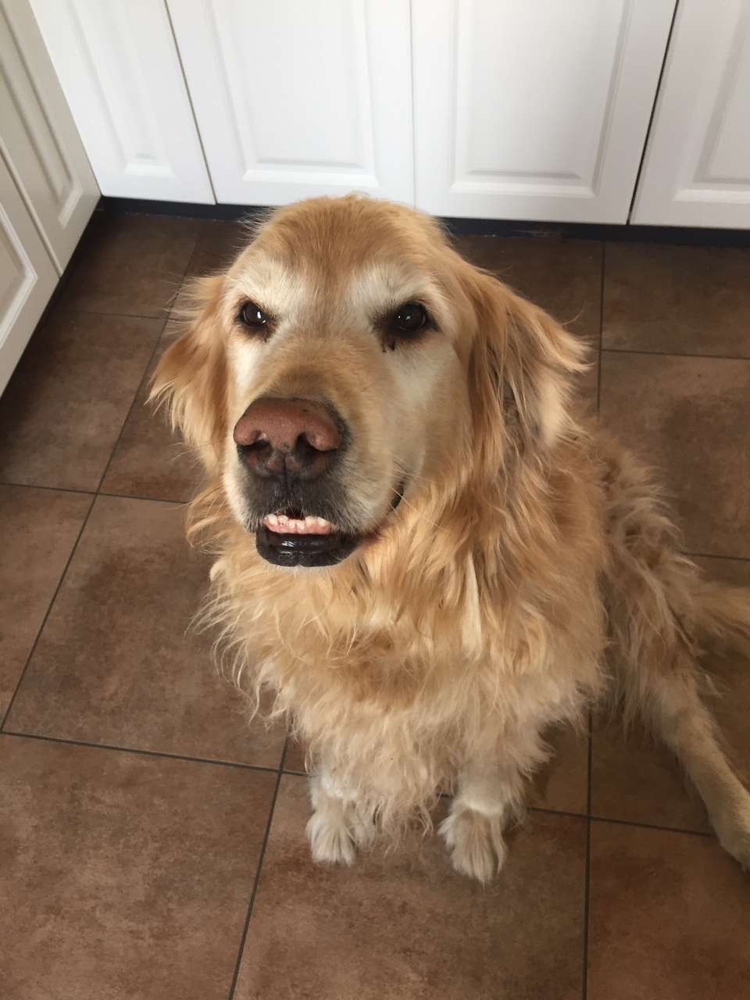
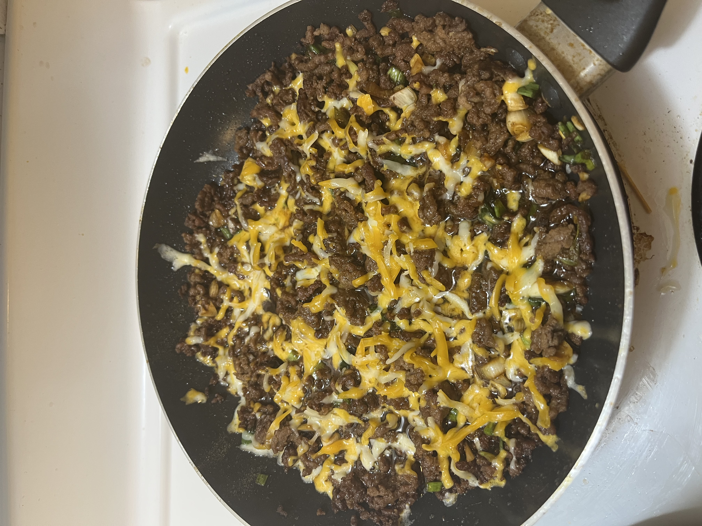
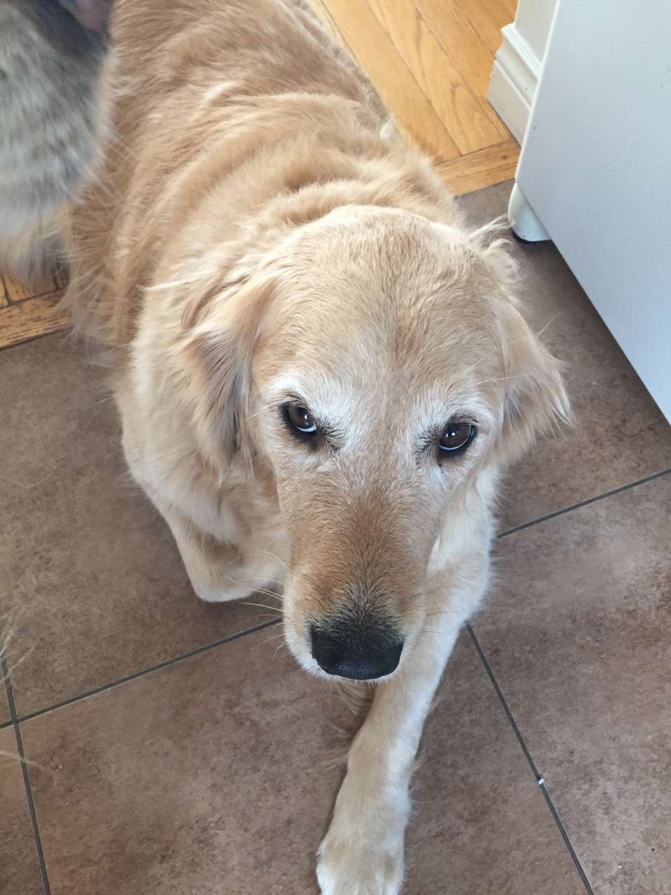
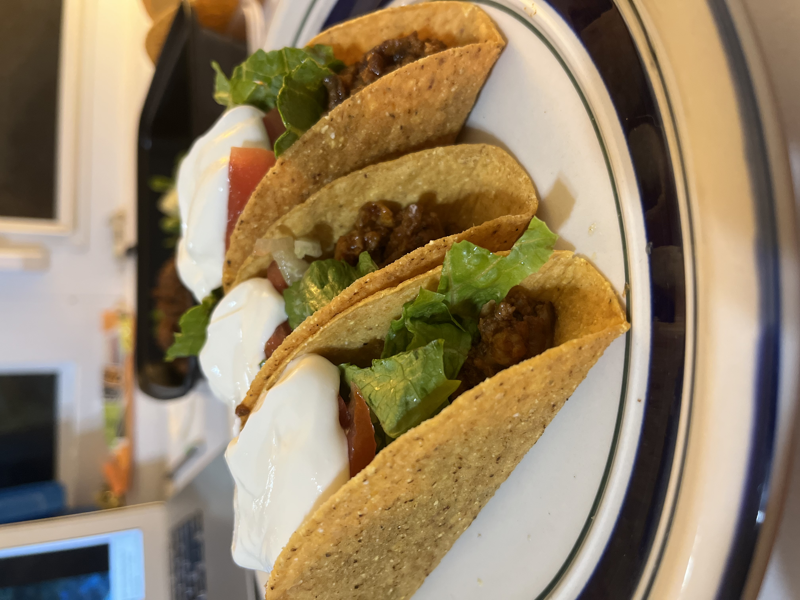
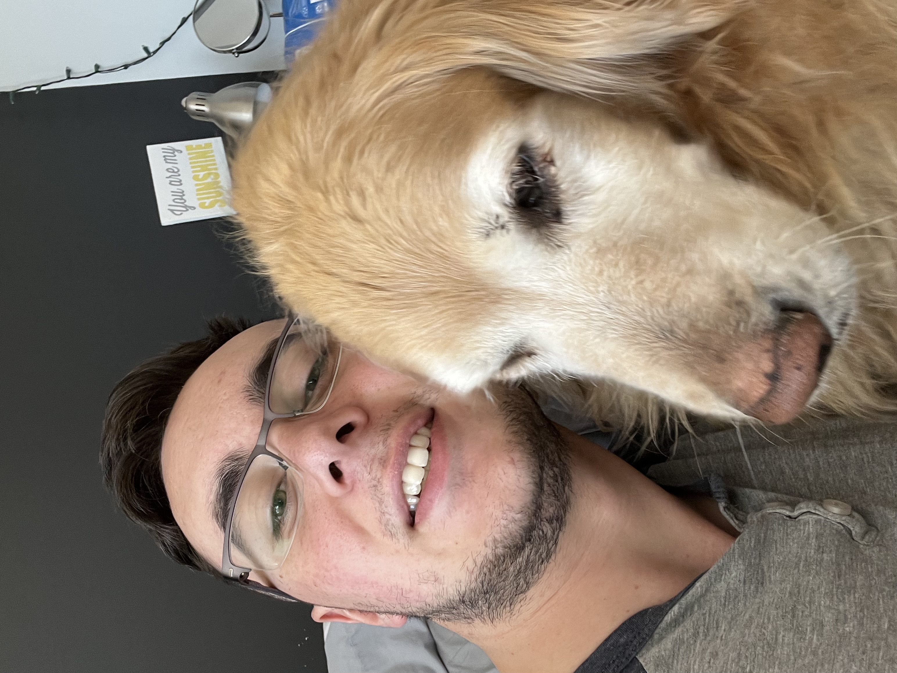
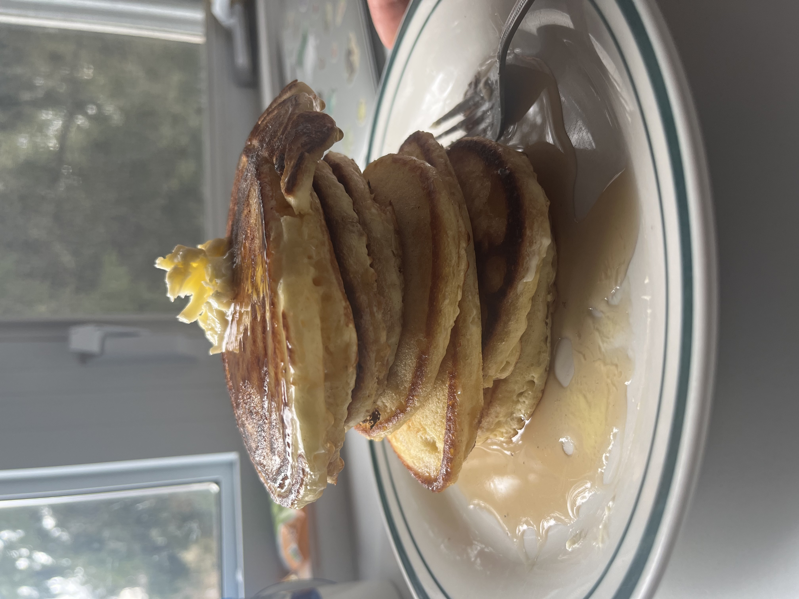

Current
I recently moved to the Ottawa area to continue my studies at Carleton Univeristy. I just finished my second year of Computer Science and will soon be starting my first tech-related job as a student with Elections Canada, where I will be doing IT Support as part of their Desktop Engineering team for the summer. I will also be continuing my work with the schools's Campus Tour team as a Tour Guide, which will hopefully improve my public speaking skills.
Personal
Beyond work, I'm focusing on my personal development and health. Lately, I've started a bulking program to improve my physique and have been hitting the gym a lot. The 5/3/1 training program is what I'm following at the moment. On my spare time, I am exploring the National Capital Region and have been really into Hans Zimmer's Dune soundtrack at the moment.
Baking
My favourite things that I've learned to make so far...
- Classic cheesecake
- Baked Alaska
- Lemon meringue pie
- Pretzel buns
- Oreo cookie creampie
Some photos...








